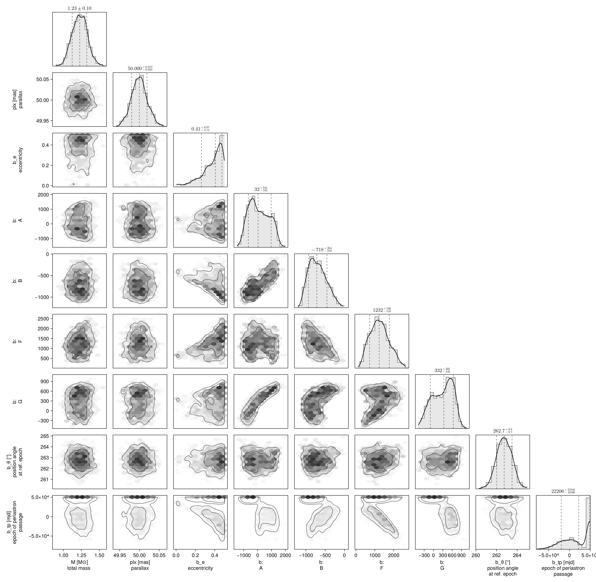
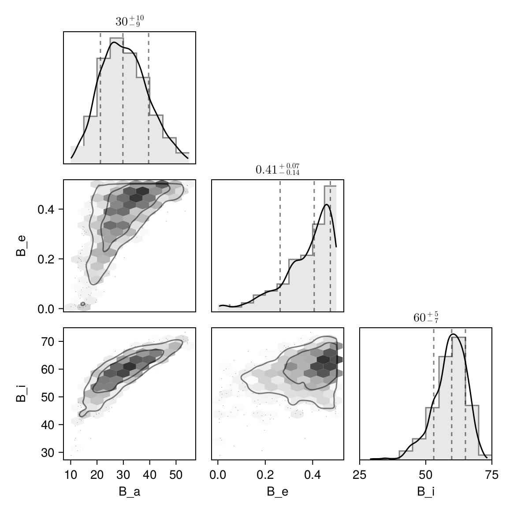

Fit with a Thiele-Innes Basis
This example shows how to fit relative astrometry using a Thiele-Innes orbital basis instead of the traditional Campbell basis used in other tutorials. The Thiele-Innes basis is more suitable then Campbell for fitting low-eccentricity orbits, because it does not have the issues where ω, Ω, and tp become degenerate as eccentricity and/or inclination fall to zero.
At the end, we will convert our results back into the Campbell basis to compare.
using Octofitter
using CairoMakie
using PairPlots
using Plots:Plots
using Distributions
astrom_like = PlanetRelAstromLikelihood(
(epoch = 50000, ra = -505.7637580573554, dec = -66.92982418533026, σ_ra = 10, σ_dec = 10, cor=0),
(epoch = 50120, ra = -502.570356287689, dec = -37.47217527025044, σ_ra = 10, σ_dec = 10, cor=0),
(epoch = 50240, ra = -498.2089148883798, dec = -7.927548139010479, σ_ra = 10, σ_dec = 10, cor=0),
(epoch = 50360, ra = -492.67768482682357, dec = 21.63557115669823, σ_ra = 10, σ_dec = 10, cor=0),
(epoch = 50480, ra = -485.9770335870402, dec = 51.147204404903704, σ_ra = 10, σ_dec = 10, cor=0),
(epoch = 50600, ra = -478.1095526888573, dec = 80.53589069730698, σ_ra = 10, σ_dec = 10, cor=0),
(epoch = 50720, ra = -469.0801731788123, dec = 109.72870493064629, σ_ra = 10, σ_dec = 10, cor=0),
(epoch = 50840, ra = -458.89628893460525, dec = 138.65128697876773, σ_ra = 10, σ_dec = 10, cor=0),
)
@planet b ThieleInnesOrbit begin
e ~ Uniform(0.0, 0.5)
A ~ Normal(0, 10000) # milliarcseconds
B ~ Normal(0, 10000) # milliarcseconds
F ~ Normal(0, 10000) # milliarcseconds
G ~ Normal(0, 10000) # milliarcseconds
θ ~ UniformCircular()
tp = θ_at_epoch_to_tperi(system,b,50000.0) # reference epoch for θ. Choose an MJD date near your data.
end astrom_like
@system TutoriaPrime begin
M ~ truncated(Normal(1.2, 0.1), lower=0)
plx ~ truncated(Normal(50.0, 0.02), lower=0)
end b
model = Octofitter.LogDensityModel(TutoriaPrime)LogDensityModel for System TutoriaPrime of dimension 9 with fields .ℓπcallback and .∇ℓπcallback
We now sample from the model as usual:
using Random
Random.seed!(0)
results = octofit(model)Chains MCMC chain (1000×24×1 Array{Float64, 3}):
Iterations = 1:1:1000
Number of chains = 1
Samples per chain = 1000
Wall duration = 5.69 seconds
Compute duration = 5.69 seconds
parameters = M, plx, b_e, b_A, b_B, b_F, b_G, b_θy, b_θx, b_θ, b_tp
internals = n_steps, is_accept, acceptance_rate, hamiltonian_energy, hamiltonian_energy_error, max_hamiltonian_energy_error, tree_depth, numerical_error, step_size, nom_step_size, is_adapt, loglike, logpost, tree_depth, numerical_error
Summary Statistics
parameters mean std mcse ess_bulk ess_tail ⋯
Symbol Float64 Float64 Float64 Float64 Float64 Fl ⋯
M 1.2274 0.1039 0.0041 633.6435 716.3752 0 ⋯
plx 49.9998 0.0198 0.0006 1026.5085 591.1319 0 ⋯
b_e 0.3728 0.1121 0.0065 299.2430 220.2950 1 ⋯
b_A 101.8473 718.2594 58.3297 159.7688 329.7242 1 ⋯
b_B -696.3580 229.2887 17.3677 188.1082 304.3888 1 ⋯
b_F 1254.1753 497.6040 31.9884 236.1138 454.2926 1 ⋯
b_G 285.0802 329.6474 27.3383 150.7190 298.9710 1 ⋯
b_θy -0.1263 0.0130 0.0006 528.2141 536.0780 0 ⋯
b_θx -0.9924 0.0195 0.0008 594.5649 670.2647 1 ⋯
b_θ -1.6974 0.0129 0.0005 555.2177 590.8078 0 ⋯
b_tp 18436.8768 32464.2357 2092.5831 288.9490 474.0646 1 ⋯
2 columns omitted
Quantiles
parameters 2.5% 25.0% 50.0% 75.0% 97.5% ⋯
Symbol Float64 Float64 Float64 Float64 Float64 ⋯
M 1.0324 1.1565 1.2275 1.2985 1.4363 ⋯
plx 49.9605 49.9864 49.9998 50.0122 50.0384 ⋯
b_e 0.0749 0.3170 0.4066 0.4577 0.4972 ⋯
b_A -1045.0828 -479.8548 32.3673 688.7893 1376.5923 ⋯
b_B -1062.7100 -872.3513 -718.4553 -532.4733 -217.0270 ⋯
b_F 412.3520 885.7390 1232.4212 1571.3394 2261.5860 ⋯
b_G -336.3080 12.5771 331.5365 558.4611 790.3779 ⋯
b_θy -0.1522 -0.1350 -0.1261 -0.1172 -0.1013 ⋯
b_θx -1.0308 -1.0056 -0.9923 -0.9790 -0.9542 ⋯
b_θ -1.7217 -1.7060 -1.6975 -1.6882 -1.6734 ⋯
b_tp -46628.9591 -8687.7394 22206.3888 48725.5089 49870.2191 ⋯
Notice that the fit was very very fast! The Thiele-Innes orbital paramterization is easier to explore than the default Campbell in many cases.
We now display the results:
octoplot(model,results)
octocorner(model, results, small=false)
Conversion back to Campbell Elements
To convert our chain into the more familiar Campbell parameterization, we have to do a few steps. We start by turning the chain table into a an array of orbit objects, and then convert their type:
orbits_ti = Octofitter.construct_elements(results, :b, :) # colon means all rows1000-element Vector{ThieleInnesOrbit{Float64}}:
ThieleInnesOrbit{Float64}(0.45378811436313543, 48728.54386511574, 1.2480456042734795, 50.00906746123547, -678.4898415980156, -995.0976419420834, 1570.7258076324135, 55.70530579012383, -26.38838573988014, -16.988491888360993, 69814.64540123008, 0.03287110335393201, 1.631435783752915)
ThieleInnesOrbit{Float64}(0.393841482570532, -7449.775596332853, 1.3470974729335938, 49.999539907002145, 225.36768407419333, -749.377205522981, 1554.551737878479, 470.59390371548, -28.46592943718958, -0.03241295204260345, 58263.94993719136, 0.03938772477794309, 1.516399340118351)
ThieleInnesOrbit{Float64}(0.35508100430925427, 3628.9847315341904, 1.3556074754000005, 50.001531347816154, 532.5503920265153, -597.4696840154159, 1287.1438942636394, 545.8762947674138, -23.714019555925173, 6.060591090832945, 48007.18500114399, 0.04780293667598427, 1.4495394658659606)
ThieleInnesOrbit{Float64}(0.40373916506851376, -164.1287062621559, 1.0234762149711718, 50.019037433565494, 453.70792984676433, -641.2266219508919, 1205.8558702832343, 632.2243775809827, -22.377211092560117, 2.5311361626388402, 51604.76166430027, 0.044470400610134575, 1.5343522220875832)
ThieleInnesOrbit{Float64}(0.28821316377612755, 13176.315832636385, 1.0123239845392038, 49.98278144103412, 496.21320008347556, -546.2160603179158, 992.2841258635057, 422.0813339093234, -16.90783508581908, 6.198719307631684, 38605.709010451756, 0.059444172466322324, 1.3452992200743614)
ThieleInnesOrbit{Float64}(0.49118900995525905, -14994.749585888268, 1.3600144548701099, 49.9955596112673, 1380.2747112349848, -368.4796696303988, 1147.560917639247, 793.4940226225739, -22.31988380068454, 23.150520722444522, 68379.87551901619, 0.033560816061499694, 1.7119382893401347)
ThieleInnesOrbit{Float64}(0.4924818721257041, 1452.216114692761, 1.2778245230238907, 49.99075870424117, 1355.8567256269757, -373.54425900301845, 591.337969014662, 681.3071053816685, 9.31600645737053, -23.506791798855378, 52125.81807558001, 0.04402586874079314, 1.714860325584022)
ThieleInnesOrbit{Float64}(0.4371323878375595, -41593.73809289768, 1.2687311789609164, 50.01076243575653, 941.2792152960119, -599.5248923326612, 1942.8635627411716, 698.2230990654836, -37.79826851591288, 14.916747629693564, 94297.79527176815, 0.024336565006509908, 1.5978840387271729)
ThieleInnesOrbit{Float64}(0.47801592933894693, -55238.483547293465, 1.2217920861372482, 50.010364813417425, 1231.051047567065, -497.72861026406036, 1963.4576353178345, 911.3261124995561, -39.53319791868172, 19.858850723351242, 108591.50596560846, 0.02113318536468912, 1.682716419226221)
ThieleInnesOrbit{Float64}(0.4525224296960875, -23837.090944720752, 1.1228288404615352, 50.00669801987917, -111.11663576975396, -927.1092082959174, 1687.461179942282, 450.4058675866476, -30.559220010870703, -7.9179816152353, 73870.87815539364, 0.03106615870701394, 1.6288393707057383)
⋮
ThieleInnesOrbit{Float64}(0.3974746362118395, 932.0016437730083, 1.1661486158071366, 49.99114049980625, 356.3700049698473, -743.8222302778312, 1345.6875731454443, 329.84453497139214, -22.650742240029956, 4.1376129909360415, 50172.35974380375, 0.0457400137510049, 1.522945283845785)
ThieleInnesOrbit{Float64}(0.4767718321781806, -71458.46811503041, 1.3257853869269371, 49.9934720155384, 200.3548926540208, -883.950758081293, 2565.333176413986, 650.317931175444, -49.73751415854893, -0.48967363222660887, 122181.31018304332, 0.018782614306262685, 1.6800071962202061)
ThieleInnesOrbit{Float64}(0.3911816543060235, -4023.0535121441208, 1.1309309179404052, 49.995628755810394, 323.9922705534772, -722.0712328870683, 1399.9952912614453, 457.62357984189066, -24.9245798670236, 1.9767212456251124, 55104.06579652121, 0.04164637203135067, 1.51163888696055)
ThieleInnesOrbit{Float64}(0.3578831323045068, -9267.424142372038, 1.3391131409793735, 50.000932136994244, 418.68729920975574, -671.479233481047, 1582.53825871783, 456.7148072883638, -29.296992577228842, 4.859213992342887, 60646.49494869614, 0.037840347188131875, 1.4542000576079086)
ThieleInnesOrbit{Float64}(0.4661968641234994, -3452.9557492936365, 1.3731546687356349, 49.99076658299295, 1216.0304676186022, -389.1690374157209, 1017.6359549305697, 757.5076132953579, -19.315160577397624, 19.529241304970434, 56479.10862487876, 0.04063244765146777, 1.657316990836935)
ThieleInnesOrbit{Float64}(0.4157119667299603, 49652.95077888399, 1.166182614910128, 50.02028482432691, -258.35163189177314, -861.4617825492904, 1725.1835574829875, 150.24680540977363, -30.528246810307945, -7.529675639727128, 71325.85237023988, 0.03217465124271644, 1.5565889950748089)
ThieleInnesOrbit{Float64}(0.3369273272084009, 49529.81141470334, 1.093016650818322, 49.976203517837284, -261.8734535407947, -770.2656080312042, 1437.9395842147906, 82.68889903767844, -24.819823139449834, -7.101903563346692, 56495.09997058166, 0.04062094634396521, 1.419950926392483)
ThieleInnesOrbit{Float64}(0.3885670269537891, 457.6419469676912, 1.2294582329769033, 50.00559431827144, 438.5171654026065, -680.1220046106657, 1337.5667355702476, 488.24249166750434, -23.81551578798291, 4.2732574351638, 50893.894641067505, 0.04509154665381318, 1.506985232085869)
ThieleInnesOrbit{Float64}(0.11402798578146824, 19099.54767778354, 1.2877783835273602, 50.00095390229785, 317.9419320981714, -495.52486781674156, 1026.6096652685096, 264.06049290386363, -18.148625549588775, 4.3098857873910905, 32386.108569700496, 0.07086014732714678, 1.1213418957145758)Here is one of those entries:
display(orbits_ti[1])We can now make a table of results (and visualize them in a corner plot) by querying properties of these objects:
table = (;
B_a = semimajoraxis.(orbits_ti),
B_e = eccentricity.(orbits_ti),
B_i = rad2deg.(inclination.(orbits_ti)),
)
pairplot(table)
We can also convert the orbit objects into Campbell parameters:
orbits_campbell = Visual{KepOrbit}.(orbits_ti)
orbits_campbell[1]KepOrbit{Float64}
─────────────────────────
a [au ] = 35.7
e = 0.45378811
i [° ] = 61.5
ω [° ] = 237.0
Ω [° ] = 19.1
tp [day] = 48700.0
M [M⊙ ] = 1.25
period [yrs ] : 191.1
mean motion [°/yr] : 1.88
──────────────────────────
plx [mas] = 50.0
distance [pc ] : 20.0
──────────────────────────